Stock Journal Entry - Real-time Perpetual Inventory
Real-time stock accounting: perpetual inventory journal entries at every receipt, delivery, return and transfer, with per-category and per-warehouse accounts.
- Price
- $49
- Odoo versions
- 19.0
- 20.0
- Technical name
tamadoo_stock_realtime_je- License
- OPL-1

Text and screenshots below are from the Odoo 20.0 version of this module.
A balanced journal entry the moment goods are received, delivered or returned — with per-category Stock Input / Stock Output accounts that clear to zero against the vendor bill and the customer invoice.
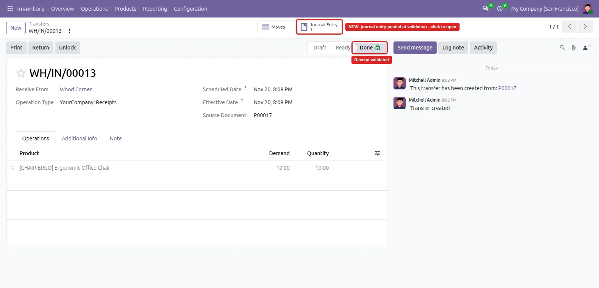
Why you need it on Odoo 20
Since Odoo 19 (and still in Odoo 20), Odoo no longer posts a journal entry when stock physically moves in the standard Vendors → Stock → Customers flow, and it removed the per-category Stock Input / Output interim accounts. Inventory only reaches your books at bill or invoice time.
Entry at every stock move
Receipts, deliveries, returns to vendor and returns from customers post instantly, so your balance sheet always matches the warehouse.
Interims that reconcile
The vendor bill debits GR/IR and the COGS entry credits Stock Output — both clear to zero. Bill price differences are handled for Standard, FIFO and AVCO.
Per category, opt-in
Turn it on per product category, with its own accounts or company defaults. Categories left off keep native Odoo 20 behaviour.
Inventory per warehouse
Optional inventory account per warehouse and category. Transfers between warehouses move the value from one account to the other.
What gets posted
| Event | Debit | Credit |
|---|---|---|
| Vendor receipt | Stock Valuation | Stock Input (GR/IR) |
| Vendor bill | Stock Input (GR/IR) | Accounts Payable |
| Customer delivery | Stock Output | Stock Valuation |
| Customer invoice (COGS) | Cost of Goods Sold | Stock Output |
| Return to vendor | Stock Input (GR/IR) | Stock Valuation |
| Return from customer | Stock Valuation | Stock Output |
| Transfer between warehouses | Destination warehouse inventory | Source warehouse inventory |
With warehouse inventory accounts, "Stock Valuation" above is the account of the warehouse the goods enter or leave.
Step by step
1. Company default accounts
Inventory → Configuration → Settings → Valuation.
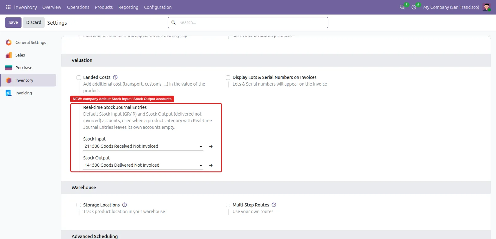
2. Turn it on per product category
On the category's Logistics tab: choose Perpetual valuation, tick Real-time Journal Entries and optionally set category-specific accounts. No accounting role is needed: an Inventory Administrator who can edit product categories does it.
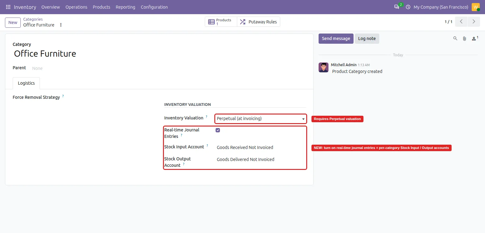
3. Receive goods — the entry is posted at validation
Open it from the Journal Entry button on the receipt. Viewing the journal entries needs an Invoicing or Accounting role; the set-up of categories and warehouse accounts does not.
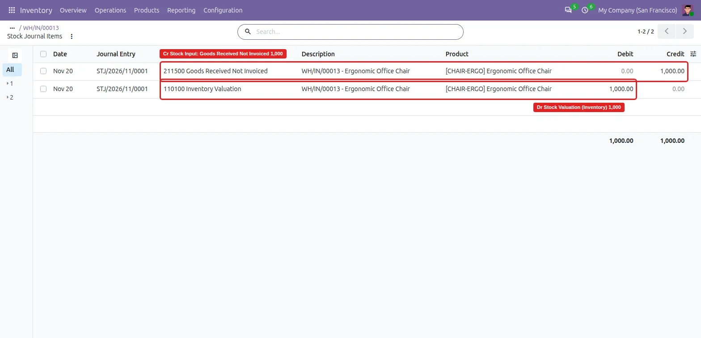
4. The vendor bill clears GR/IR
The bill line is booked on the Stock Input account. When the bill price differs from the receipt, the difference is posted too, so GR/IR still nets to zero.
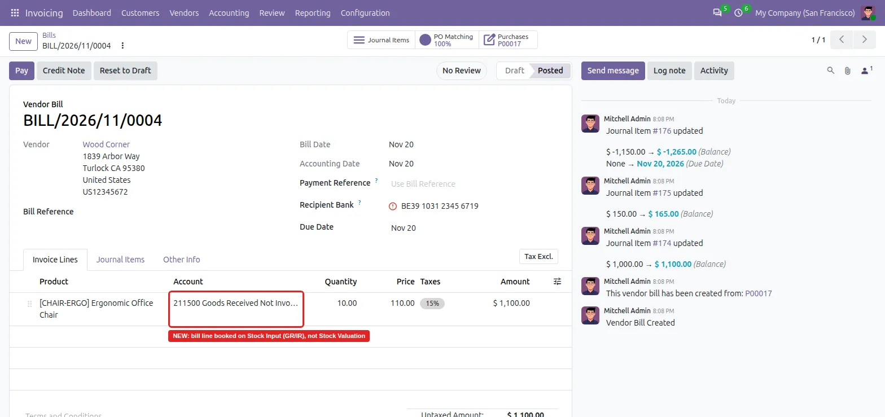
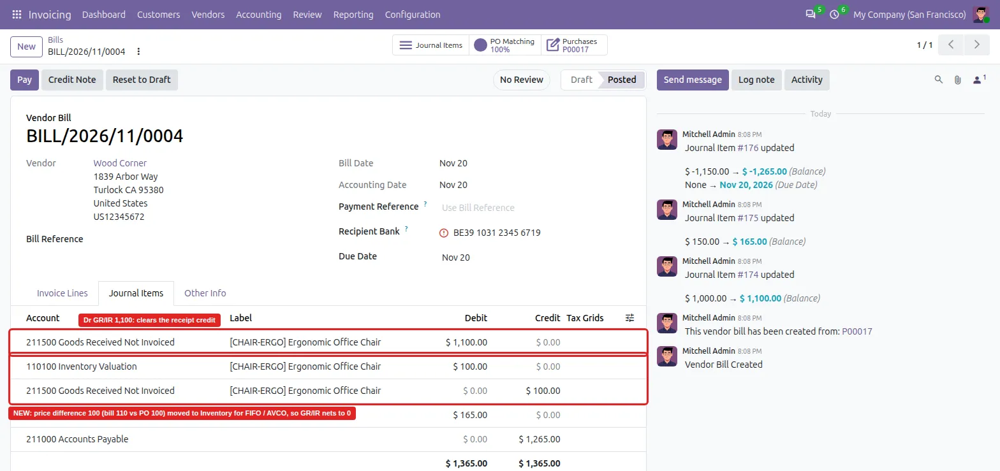
5. Deliver — inventory leaves the books immediately
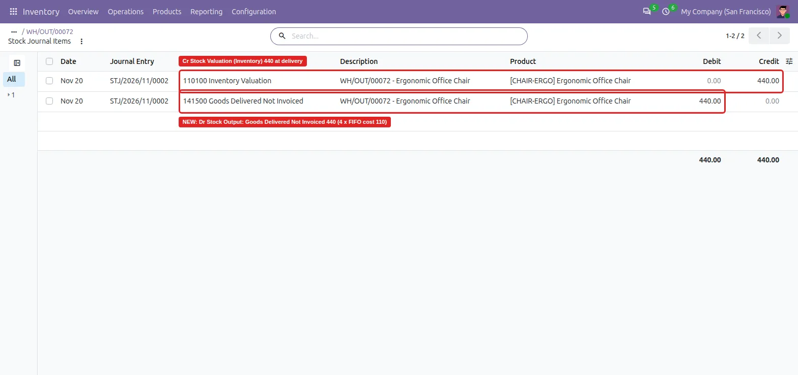
6. Invoice — COGS clears the Stock Output interim
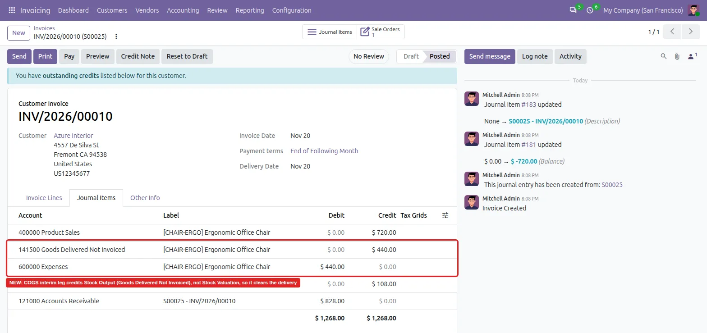
7. Result — interims at zero, inventory matches stock on hand
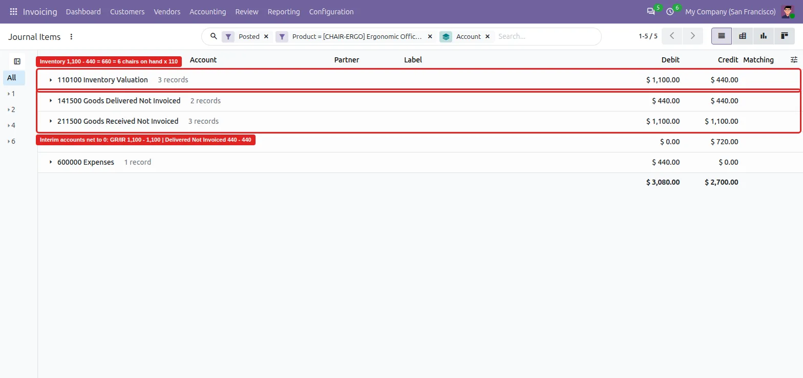
8. Optional — an inventory account per warehouse
Inventory → Configuration → Warehouse Inventory Accounts: pick a warehouse, the product categories and their inventory account. Receipts and deliveries then post to that warehouse's account.
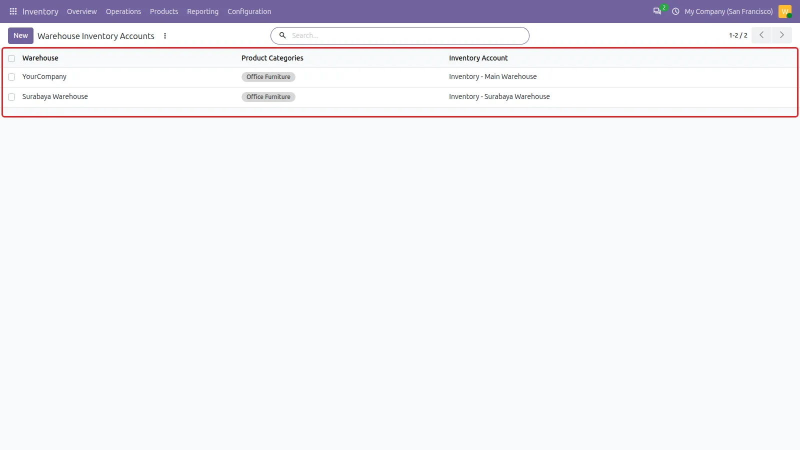
9. Transfer between warehouses — value follows the goods
Validate an internal transfer to another warehouse and an entry moves the value from the source warehouse's account to the destination's. Transfers inside one warehouse post nothing.
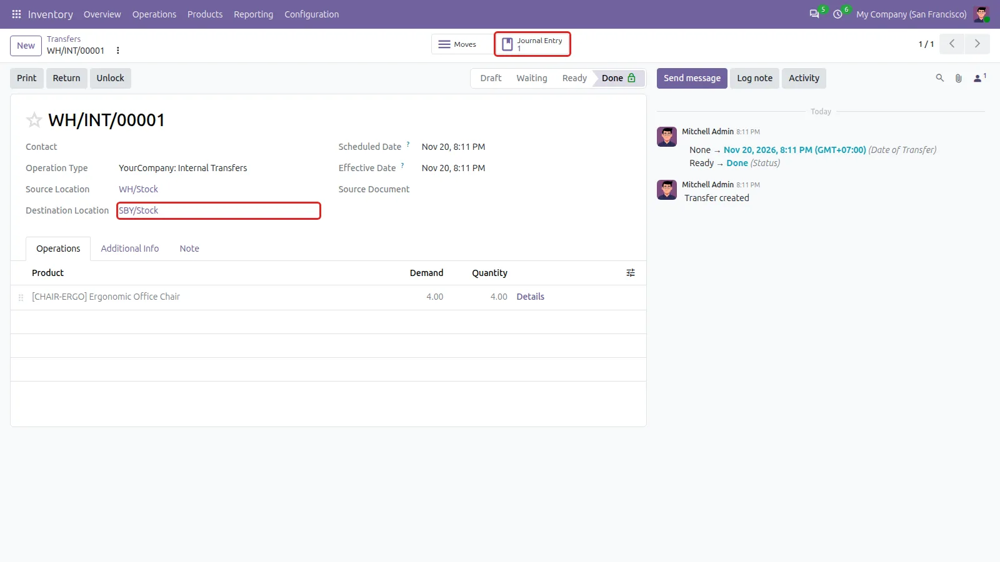
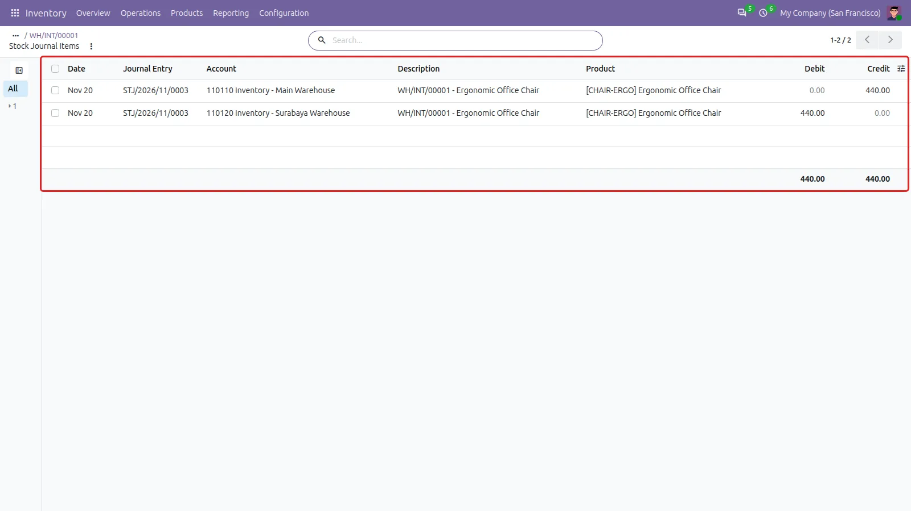
Set up in 2 minutes
- Create (or reuse) two reconcilable accounts: Goods Received Not Invoiced and Goods Delivered Not Invoiced.
- Inventory → Configuration → Settings → Valuation: set them as the default Stock Input / Stock Output accounts.
- Inventory → Configuration → Product Categories: set Inventory Valuation to Perpetual and tick Real-time Journal Entries.
- Optional: Inventory → Configuration → Warehouse Inventory Accounts for an inventory account per warehouse.
- Receive, deliver, transfer and invoice as usual.
Requirements: Odoo 20.0 with Inventory and Purchase. Inventory adjustments, scrap and manufacturing keep the native Odoo 20 behaviour (posted when the location has a valuation account), on the warehouse's inventory account when one is set.
Get Stock Journal Entry
Questions before buying? Write to tama.odoo@gmail.com.